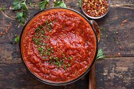

Marinara Sauce

Description
This is my personal recipe to make a delicous herby Marinara Sauce. This recipe can be used for anything you need a Marinara Sauce for, from pizza to pasta and everything in-between.
Ingredients
- 1/4 cup fresh thyme leaves
- 4 cloves of garlic
- 1/8 cup dried oregano leaves
- 2 28 ounce cans of peeled San Marzano tomatoes (with basil preffered)
- Salt
- 2 tablespoons olive oil
Steps
- Slice the four cloves or garlic thinly. In a large pot start heating the olive oil on medium heat.
- Once the oil is hot throw in the garlic and stir around until it starts to become golden brown.
- Once the garlic has obtained the desired color throw in your fresh and dried herbs. Stir this mixture until aromatic.
- After you can smell the herbs and garlic put in your San Marzano tomatoes, use a rubber spatula to scrape all of the juices of the inside of the can.
- Stir the mixture and bring to a boil. Once you reach a boil take the mixture down to a simmer and let simmer for 45 minutes.
- After 45 minutes remove from heat and blend adding salt to taste, use a blender or vitamix if you can, if not any hand blender will be sufficient although the sauce will be more chunky.